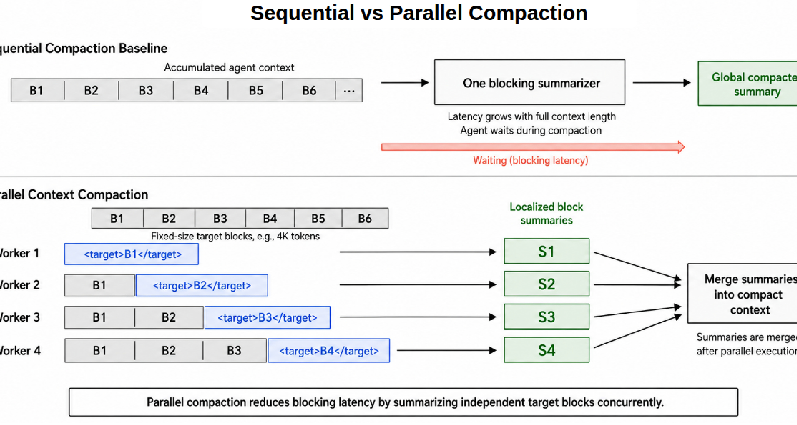
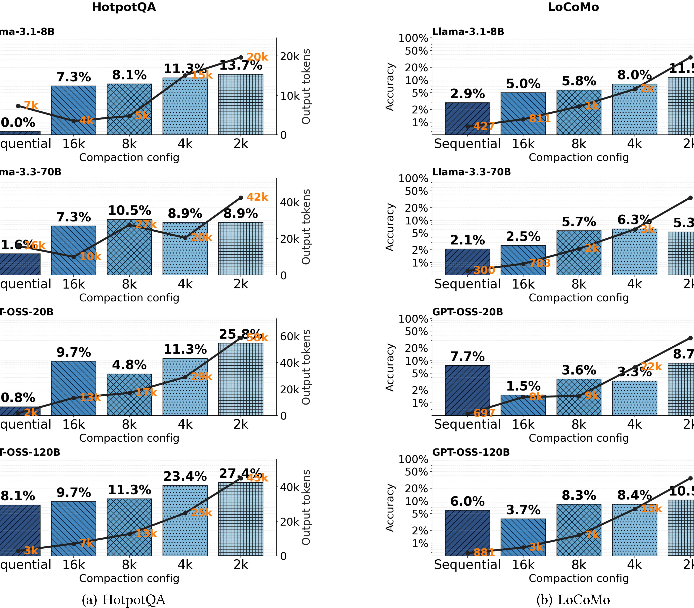
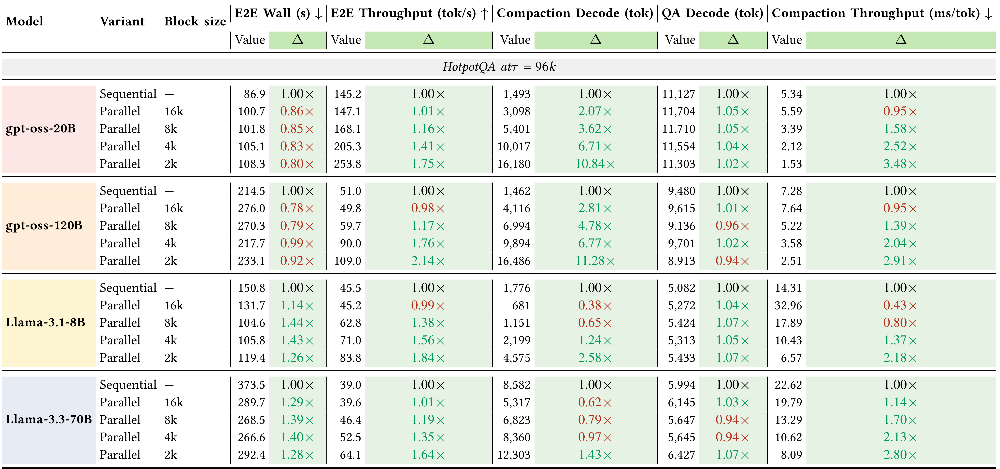
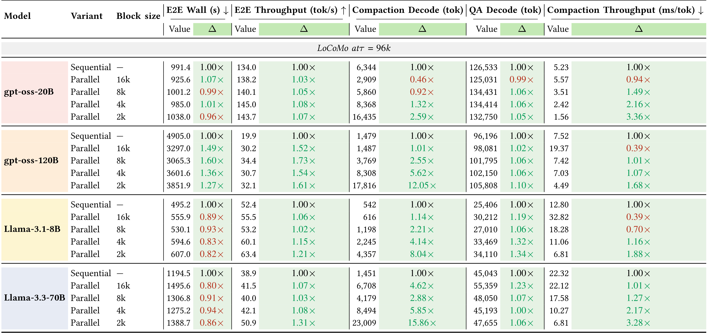
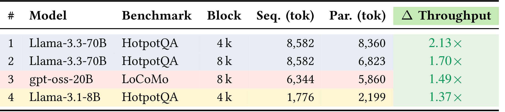
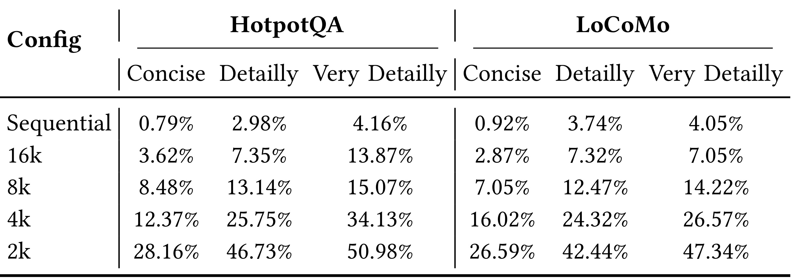

Parallel Context Compaction for Long-Horizon LLM Agent Serving：长程 LLM Agent Serving 的并行上下文压缩
论文入口：arXiv:2605.23296。作者：Musa Cim, Burak Topcu, Chita Das, Mahmut Taylan Kandemir。机构口径：The Pennsylvania State University。主类别：LLM；公开日期：2026-05-22。
本文把长程 agent 的阻塞式串行上下文压缩改成并行分块压缩，让 block size、触发阈值、输出摘要长度、wall time、TPOT 与任务准确率可以一起评估。新版笔记按服务流程重写，并纳入论文的关键效率表。
1. 背景和问题
长程 agent 会不断积累系统提示、用户指令、工具调用、观察结果、中间计划和错误恢复记录。当历史接近上下文窗口上限时，常见做法是调用一个 LLM summarizer 把整段历史压缩成摘要，再继续执行任务。这种串行压缩有两个明显缺陷：摘要本身有损，可能丢失关键约束；压缩调用又是阻塞的，会让用户等待和 agent 执行同时停下来。
Parallel Context Compaction 的出发点是把 compaction 视为 serving 问题，而不是单纯 prompt 摘要问题。一个可上线的 agent 系统需要同时关心准确率、端到端 wall time、time per output token、压缩触发频率和输出 token 占比。若只看摘要更短，可能把任务做错；若只看速度更快，可能把关键状态压没。论文因此用 HotpotQA 和 LoCoMo 同时检查质量与成本。
本文特别关注 output token 与 input length 的关系。串行摘要在长输入上会生成较长输出，输出 token 占比会随输入长度变化；当摘要模型本身很慢时，压缩会成为长程 agent 的主要阻塞点。并行压缩试图把历史分成多个 target block，让 worker 同时生成局部摘要，再 merge 成 compact context。
对推荐、搜索和多轮客服也有相似问题。用户长会话、长期画像和跨工具轨迹都需要压缩；系统需要知道哪些内容可以并行摘要，哪些内容必须保留原文，例如最新用户修正、工具返回、文件路径和安全约束。并行 compaction 降低的是服务延迟，但仍需要上层策略决定不可压缩内容。
重写笔记时，我把方法按论文的 serving pipeline 写：先看串行 baseline 的阻塞成本，再看 snapshot/partition，接着看 parallel workers 和 merge，最后讨论 block size、threshold 与 prompt variant。实验部分保留 Table 1/2 的动机表、Figure 1/4 的框架与准确率，以及 Table 7/8/9/10 的效率明细。
论文的边界也要明确。并行压缩不会自动解决摘要真实性、冲突合并或安全规则保留问题。若局部摘要遗漏了关键条件，merge 再快也无法恢复。它真正贡献的是把压缩过程拆成可调服务组件，使工程师可以用 block size、threshold 和 prompt style 在速度与准确率之间选点。
从 agent 工程角度，本文最值得借鉴的是指标组合。压缩方案至少应报告准确率、compaction decode token、QA decode token、E2E wall time 和 throughput；只报告 token savings 不足以说明可用。论文的大表虽然复杂，但正好暴露了不同模型和 block size 下的 Pareto 差异。
长程 agent 的上下文并不是普通文本堆叠。里面可能包含用户最后一次修正、工具返回的文件路径、失败尝试、系统约束和阶段性计划。压缩时若把这些信息等同处理，模型会更快但更容易出错。论文用服务指标而不是单纯摘要长度评估，正是因为上下文管理直接影响任务正确性。
串行 compaction 的痛点不仅是慢，也包括不可预测。用户可能在一次任务中等待多个压缩点，每个压缩点都调用大模型生成摘要。并行化把大停顿拆成多个 worker 的最大耗时加 merge 耗时，使工程师能够通过 block size 和 worker 数量控制延迟分布。
不过并行化也引入新问题：块与块之间的指代关系、时间顺序和冲突信息可能被局部摘要打散。真正可用的系统需要保留最近原文、给摘要加版本、在 merge 阶段标记不确定内容，并能回放原始上下文。
这篇论文适合检验实验图表是否完整。Table 7 和 Table 8 很宽，若裁掉列名或只截中间局部，读者无法判断 wall time、throughput、decode token 之间的关系。因此新版笔记保留了完整大表。
并行压缩的另一个背景是成本隔离。多个 worker 可以在不同资源池中运行，系统能把摘要延迟从主推理链路中部分拆开；但 merge 仍然是关键路径，所以它必须短、稳、可监控。
长上下文任务还会遇到用户最新指令优先级问题。压缩历史时若没有明确保留最近轮次，模型可能按照旧计划继续执行。论文的框架给了调度空间，但真实系统仍需定义 recency policy。
从这篇论文的阅读顺序看，宾州州立-ParallelCompaction 还要求把问题定义、系统边界和实验证据先分开。触发阈值、分块摘要、并行 worker、merge 和 serving 指标 都会影响最终结论，如果背景只写成“方法有效”，读者无法判断收益来自任务设定、数据规模、工程约束还是评估协议。第 1 次补充只用于补足这一边界说明。
2. 方法
方法章按服务链路展开。输入是不断增长的 agent context；当长度超过阈值 $ au$ 时，系统不再把全量历史交给一个 summarizer，而是把历史切成多个 block，让多个 worker 并行摘要各自目标块，再用 merge step 形成 compact context。
方法重点不是发明新的摘要模型，而是改变压缩调度。它把原来单个阻塞调用的 latency 变成多个并行 worker 的最大耗时加一次合并耗时，因此 block size 与 worker 数量会直接影响 wall time 和准确率。
串行与并行压缩的延迟差异可抽象为：
符号解释：$B=\{b_1,\ldots,b_k\}$ 是被切分的上下文块，$T_{\mathrm{summ}}$ 是摘要调用时间，$T_{\mathrm{merge}}$ 是把局部摘要合并成 compact context 的时间。并行方法的收益来自最大 worker 时间小于整段串行摘要时间，但合并误差和块边界会影响任务质量。
2.1 串行 compaction baseline 与阻塞成本
论文先用表格说明串行压缩为什么会成为瓶颈。随着 input tokens 增长，平均输出 token 仍然可观，output/input 比例虽然下降，但单次摘要的 wall time 可能很高。对 agent 服务来说，压缩不是后台批处理，而是用户请求路径上的阻塞点。
串行 baseline 的另一个问题是摘要误差会累积。每次把旧历史压成摘要，下一次又压缩包含摘要的新历史；一旦早期摘要漏掉约束，后面很难恢复。并行 compaction 不完全解决真实性问题，但它让每个 block 的摘要更短、更可检查，也让系统有机会保留最新原文。
围绕“串行 compaction baseline 与阻塞成本”，实现者需要先确认输入和输出边界。这里处理的是 串行 baseline 把全部历史交给一个 summarizer，延迟和摘要误差都集中在单点。 如果边界没有写清，后续实验分数即使提升，也很难知道是模型能力、数据泄露、prompt 变化还是评估切分造成的。把边界写进方法小节，可以让读者顺着论文流程检查每个模块的责任。
在“串行 compaction baseline 与阻塞成本”这一步，还需要关注状态保存方式。长上下文触发阈值、block size、parallel worker、merge summary、E2E wall time 和准确率 都不是一次性变量，而是会跨 batch、跨请求或跨评估周期保留的系统状态。状态一旦被更新，就应记录版本、触发条件和回滚依据；否则论文中的方法闭环在工程落地时会变成不可追踪的脚本。 方法检查点编号 1，用于区分该模块与相邻模块的状态风险。
从复现角度看，“串行 compaction baseline 与阻塞成本”对应的难点通常不在公式，而在数据接口。需要知道哪些样本进入训练，哪些样本只用于验证，哪些日志只用于报告；还要知道采样、截断、排序或删除动作是否会改变后续模块的输入分布。这个检查能避免把流水线副作用误读成算法收益。
评估时应把这个模块与后续图表对应起来。论文中每个关键表格都在回答一个具体问题：模块是否必要、超参是否敏感、效率是否可接受、迁移是否成立。如果方法小节没有提前解释模块目标，实验节的表格就会变成孤立数字。
失败模式也要提前写出。串行 baseline 把全部历史交给一个 summarizer，延迟和摘要误差都集中在单点。 在理想条件下能改善系统，但在噪声反馈、分布漂移、过长输入、候选变化或安全约束改变时都可能退化。把失败模式放进方法说明，不会削弱论文贡献，反而能帮助读者判断它适合哪些生产场景。
在“串行 compaction baseline 与阻塞成本”这一小节，还需要把实现检查点写成可执行清单：输入数据是否固定、状态是否版本化、评估切分是否独立、失败样本是否能回放、以及该模块的输出是否会被下游直接消费。这样读者检查论文时，不会只停留在概念层面，而能判断方法是否具备可复现接口。
在“snapshot、partition 与 target block”这一小节，还需要把实现检查点写成可执行清单：输入数据是否固定、状态是否版本化、评估切分是否独立、失败样本是否能回放、以及该模块的输出是否会被下游直接消费。这样读者检查论文时，不会只停留在概念层面，而能判断方法是否具备可复现接口。
2.2 snapshot、partition 与 target block
并行方法在触发阈值后对当前上下文做 snapshot，然后把历史分成多个 target block。每个 worker 看到与自己 block 相关的局部上下文，并产生局部 summary。分块方式决定了摘要是否能捕捉长距离依赖，因此 block size 是最重要的调度参数之一。

图中上半部分是 sequential compaction baseline：全部累积上下文进入一个阻塞 summarizer；下半部分是 parallel context compaction：系统为不同 worker 指定 target block，生成局部 block summaries，再 merge 成 compact context。截图保留完整流程图，没有截入正文段落。这个图应和前面的延迟公式一起读：并行收益来自 worker 同时运行，但摘要质量取决于 block 边界和 merge 能否保留跨块依赖。
如果 block 太大，worker 数量少，并行收益有限；如果 block 太小，局部摘要可能缺少上下文，merge 也会处理更多片段。论文在 16k、8k、4k、2k 等配置上评估准确率和吞吐，就是为了找到这个折中。
围绕“snapshot、partition 与 target block”，实现者需要先确认输入和输出边界。这里处理的是 snapshot 固定当前上下文，partition 决定每个 worker 的 target block 和上下文范围。 如果边界没有写清，后续实验分数即使提升，也很难知道是模型能力、数据泄露、prompt 变化还是评估切分造成的。把边界写进方法小节，可以让读者顺着论文流程检查每个模块的责任。
在“snapshot、partition 与 target block”这一步，还需要关注状态保存方式。长上下文触发阈值、block size、parallel worker、merge summary、E2E wall time 和准确率 都不是一次性变量，而是会跨 batch、跨请求或跨评估周期保留的系统状态。状态一旦被更新，就应记录版本、触发条件和回滚依据；否则论文中的方法闭环在工程落地时会变成不可追踪的脚本。 方法检查点编号 2，用于区分该模块与相邻模块的状态风险。
从复现角度看，“snapshot、partition 与 target block”对应的难点通常不在公式，而在数据接口。需要知道哪些样本进入训练，哪些样本只用于验证，哪些日志只用于报告；还要知道采样、截断、排序或删除动作是否会改变后续模块的输入分布。这个检查能避免把流水线副作用误读成算法收益。
评估时应把这个模块与后续图表对应起来。论文中每个关键表格都在回答一个具体问题：模块是否必要、超参是否敏感、效率是否可接受、迁移是否成立。如果方法小节没有提前解释模块目标，实验节的表格就会变成孤立数字。
失败模式也要提前写出。snapshot 固定当前上下文，partition 决定每个 worker 的 target block 和上下文范围。 在理想条件下能改善系统，但在噪声反馈、分布漂移、过长输入、候选变化或安全约束改变时都可能退化。把失败模式放进方法说明，不会削弱论文贡献，反而能帮助读者判断它适合哪些生产场景。
阅读 3.jpg 时，我会把它和论文主张直接对应起来：它不是装饰性图片，而是在验证 长上下文触发阈值、block size、parallel worker、merge summary、E2E wall time 和准确率 中某个环节是否真实成立。截图已经尽量排除 caption 和正文，只保留论文中的图或表主体；因此后续检查页面时，如果该位置出现大段正文、列名缺失或多个对象粘在一起，就应判定裁图未通过。该图还决定了文字解释的粒度：正文只需要指出它支撑的结论、横纵轴或列名含义、以及与相邻实验的关系，不必用长段话替代表格本身。
在“parallel workers 与 merge summary”这一小节，还需要把实现检查点写成可执行清单：输入数据是否固定、状态是否版本化、评估切分是否独立、失败样本是否能回放、以及该模块的输出是否会被下游直接消费。这样读者检查论文时，不会只停留在概念层面，而能判断方法是否具备可复现接口。
2.3 parallel workers 与 merge summary
每个 worker 独立摘要自己的目标块，随后系统把局部摘要合并为一个 compact context。Merge step 必须保留任务所需信息，同时避免重复、冲突和过长输出。论文没有把 merge 描述成复杂新模型，而是把它作为服务调度中的必要阶段来评估。
这一阶段的风险是跨块依赖。例如早期块中定义的实体可能在后续块被引用，局部摘要若只看本块，会漏掉指代关系。实际部署时可以通过重叠窗口、保留最近原文和冲突标记降低风险，但这些策略会增加 token 和 latency。
围绕“parallel workers 与 merge summary”，实现者需要先确认输入和输出边界。这里处理的是 多个 worker 同时生成局部摘要，merge step 负责消除重复并恢复全局 compact context。 如果边界没有写清，后续实验分数即使提升，也很难知道是模型能力、数据泄露、prompt 变化还是评估切分造成的。把边界写进方法小节，可以让读者顺着论文流程检查每个模块的责任。
在“parallel workers 与 merge summary”这一步，还需要关注状态保存方式。长上下文触发阈值、block size、parallel worker、merge summary、E2E wall time 和准确率 都不是一次性变量，而是会跨 batch、跨请求或跨评估周期保留的系统状态。状态一旦被更新，就应记录版本、触发条件和回滚依据；否则论文中的方法闭环在工程落地时会变成不可追踪的脚本。 方法检查点编号 3，用于区分该模块与相邻模块的状态风险。
从复现角度看，“parallel workers 与 merge summary”对应的难点通常不在公式，而在数据接口。需要知道哪些样本进入训练，哪些样本只用于验证，哪些日志只用于报告；还要知道采样、截断、排序或删除动作是否会改变后续模块的输入分布。这个检查能避免把流水线副作用误读成算法收益。
评估时应把这个模块与后续图表对应起来。论文中每个关键表格都在回答一个具体问题：模块是否必要、超参是否敏感、效率是否可接受、迁移是否成立。如果方法小节没有提前解释模块目标，实验节的表格就会变成孤立数字。
失败模式也要提前写出。多个 worker 同时生成局部摘要，merge step 负责消除重复并恢复全局 compact context。 在理想条件下能改善系统，但在噪声反馈、分布漂移、过长输入、候选变化或安全约束改变时都可能退化。把失败模式放进方法说明，不会削弱论文贡献，反而能帮助读者判断它适合哪些生产场景。
在“threshold、block size 与 prompt style”这一小节，还需要把实现检查点写成可执行清单：输入数据是否固定、状态是否版本化、评估切分是否独立、失败样本是否能回放、以及该模块的输出是否会被下游直接消费。这样读者检查论文时，不会只停留在概念层面，而能判断方法是否具备可复现接口。
2.4 threshold、block size 与 prompt style
触发阈值决定系统什么时候压缩。阈值太低会频繁触发 worker，阈值太高会让模型长期背负巨大上下文，并在触发时产生更大停顿。Table 2 中不同 threshold 下 compaction 次数和 compact/E2E 比例说明这个参数会直接改变服务成本结构。
Prompt style 也会影响输出长度和准确率。Table 10 对 concise、detailed、very detailed 配置做比较，显示更详细摘要通常提高准确率，但也会增加 decode token 和服务时间。压缩不是越短越好，而是要在任务质量和响应时间之间选点。
围绕“threshold、block size 与 prompt style”，实现者需要先确认输入和输出边界。这里处理的是 触发阈值、块大小和摘要详细度共同决定压缩频率、输出长度和任务质量。 如果边界没有写清，后续实验分数即使提升，也很难知道是模型能力、数据泄露、prompt 变化还是评估切分造成的。把边界写进方法小节，可以让读者顺着论文流程检查每个模块的责任。
在“指标闭环：accuracy、TPOT 与 throughput”这一步，还需要关注状态保存方式。长上下文触发阈值、block size、parallel worker、merge summary、E2E wall time 和准确率 都不是一次性变量，而是会跨 batch、跨请求或跨评估周期保留的系统状态。状态一旦被更新，就应记录版本、触发条件和回滚依据；否则论文中的方法闭环在工程落地时会变成不可追踪的脚本。 方法检查点编号 4，用于区分该模块与相邻模块的状态风险。
从复现角度看，“threshold、block size 与 prompt style”对应的难点通常不在公式，而在数据接口。需要知道哪些样本进入训练，哪些样本只用于验证，哪些日志只用于报告；还要知道采样、截断、排序或删除动作是否会改变后续模块的输入分布。这个检查能避免把流水线副作用误读成算法收益。
评估时应把这个模块与后续图表对应起来。论文中每个关键表格都在回答一个具体问题：模块是否必要、超参是否敏感、效率是否可接受、迁移是否成立。如果方法小节没有提前解释模块目标，实验节的表格就会变成孤立数字。
失败模式也要提前写出。触发阈值、块大小和摘要详细度共同决定压缩频率、输出长度和任务质量。 在理想条件下能改善系统，但在噪声反馈、分布漂移、过长输入、候选变化或安全约束改变时都可能退化。把失败模式放进方法说明，不会削弱论文贡献，反而能帮助读者判断它适合哪些生产场景。
在“指标闭环：accuracy、TPOT 与 throughput”这一小节，还需要把实现检查点写成可执行清单：输入数据是否固定、状态是否版本化、评估切分是否独立、失败样本是否能回放、以及该模块的输出是否会被下游直接消费。这样读者检查论文时，不会只停留在概念层面，而能判断方法是否具备可复现接口。
2.5 指标闭环：accuracy、TPOT 与 throughput
论文最终用 HotpotQA 和 LoCoMo 检查准确率，用 compaction decode token、QA decode token、E2E wall time 和 throughput 检查效率。这个指标闭环比单纯压缩率更适合 agent serving，因为用户看到的是端到端响应，而不是摘要 token 数。
对于复现者，最容易忽略的是 matched decode 对照。Table 9 固定任务和模型后比较 sequential 与 parallel 的 decode token 和 throughput，能更直接说明速度收益来自调度，而不是任务变简单。
围绕“指标闭环：accuracy、TPOT 与 throughput”，实现者需要先确认输入和输出边界。这里处理的是 准确率、TPOT、decode token、wall time 和 throughput 必须一起报告，才能判断方案是否可服务化。 如果边界没有写清，后续实验分数即使提升，也很难知道是模型能力、数据泄露、prompt 变化还是评估切分造成的。把边界写进方法小节，可以让读者顺着论文流程检查每个模块的责任。
在“指标闭环：accuracy、TPOT 与 throughput”这一步，还需要关注状态保存方式。长上下文触发阈值、block size、parallel worker、merge summary、E2E wall time 和准确率 都不是一次性变量，而是会跨 batch、跨请求或跨评估周期保留的系统状态。状态一旦被更新，就应记录版本、触发条件和回滚依据；否则论文中的方法闭环在工程落地时会变成不可追踪的脚本。 方法检查点编号 5，用于区分该模块与相邻模块的状态风险。
从复现角度看，“指标闭环：accuracy、TPOT 与 throughput”对应的难点通常不在公式，而在数据接口。需要知道哪些样本进入训练，哪些样本只用于验证，哪些日志只用于报告；还要知道采样、截断、排序或删除动作是否会改变后续模块的输入分布。这个检查能避免把流水线副作用误读成算法收益。
评估时应把这个模块与后续图表对应起来。论文中每个关键表格都在回答一个具体问题：模块是否必要、超参是否敏感、效率是否可接受、迁移是否成立。如果方法小节没有提前解释模块目标，实验节的表格就会变成孤立数字。
失败模式也要提前写出。准确率、TPOT、decode token、wall time 和 throughput 必须一起报告，才能判断方案是否可服务化。 在理想条件下能改善系统，但在噪声反馈、分布漂移、过长输入、候选变化或安全约束改变时都可能退化。把失败模式放进方法说明，不会削弱论文贡献，反而能帮助读者判断它适合哪些生产场景。
3. 实验结果
实验图表按“为什么需要并行”“并行是否保持准确率”“效率收益来自哪里”的顺序放置。文字只解释每张图表的作用，具体数值以截图为准。
3.1 output token 随输入长度变化

Table 1 显示 input tokens 从 2,048 到 98,304 增长时，平均 output tokens 与 output/input 比例的变化。它说明长上下文摘要不会免费变短，摘要输出仍会消耗显著 decode 时间。这个表是并行 compaction 的动机：如果串行 summarizer 的输出很长，就会在服务路径上造成明显停顿。
阅读 1.jpg 时，我会把它和论文主张直接对应起来：它不是装饰性图片，而是在验证 长上下文触发阈值、block size、parallel worker、merge summary、E2E wall time 和准确率 中某个环节是否真实成立。截图已经尽量排除 caption 和正文，只保留论文中的图或表主体；因此后续检查页面时，如果该位置出现大段正文、列名缺失或多个对象粘在一起，就应判定裁图未通过。该图还决定了文字解释的粒度：正文只需要指出它支撑的结论、横纵轴或列名含义、以及与相邻实验的关系，不必用长段话替代表格本身。
3.2 阈值与 compaction 占比

Table 2 比较 gpt-oss-20B 和 Llama-3.1-8B 在不同 threshold 下的 compaction 次数和 compact/E2E 比例。阈值越低，压缩次数越多，压缩占端到端时间的比例也可能更高。它把触发策略从经验配置变成可量化参数，说明系统需要按模型和任务调阈值。
阅读 2.jpg 时，我会把它和论文主张直接对应起来：它不是装饰性图片，而是在验证 长上下文触发阈值、block size、parallel worker、merge summary、E2E wall time 和准确率 中某个环节是否真实成立。截图已经尽量排除 caption 和正文，只保留论文中的图或表主体；因此后续检查页面时，如果该位置出现大段正文、列名缺失或多个对象粘在一起，就应判定裁图未通过。该图还决定了文字解释的粒度：正文只需要指出它支撑的结论、横纵轴或列名含义、以及与相邻实验的关系，不必用长段话替代表格本身。
3.3 HotpotQA 与 LoCoMo 准确率

Figure 4 把 sequential 与多种 block size 的 HotpotQA、LoCoMo 准确率放在一起。图中不同模型对 block size 的敏感性并不完全相同，有些配置提升速度但准确率下降，有些配置能保持或改善结果。这个图证明并行 compaction 不能只按速度选点，必须和任务准确率一起看。
阅读 4.jpg 时，我会把它和论文主张直接对应起来：它不是装饰性图片，而是在验证 长上下文触发阈值、block size、parallel worker、merge summary、E2E wall time 和准确率 中某个环节是否真实成立。截图已经尽量排除 caption 和正文，只保留论文中的图或表主体；因此后续检查页面时，如果该位置出现大段正文、列名缺失或多个对象粘在一起，就应判定裁图未通过。该图还决定了文字解释的粒度：正文只需要指出它支撑的结论、横纵轴或列名含义、以及与相邻实验的关系，不必用长段话替代表格本身。
3.4 HotpotQA 效率大表

Table 7 是 HotpotQA 的详细效率表，列出 E2E wall、E2E throughput、compaction decode、QA decode 和 compaction throughput 等指标。它展示 parallel 方案在不同模型与 block size 下的端到端变化。将这张表放进笔记，是为了让读者检查速度收益到底来自 compaction decode 变少、throughput 提升，还是 QA decode 阶段变化。
阅读 5.jpg 时，我会把它和论文主张直接对应起来：它不是装饰性图片，而是在验证 长上下文触发阈值、block size、parallel worker、merge summary、E2E wall time 和准确率 中某个环节是否真实成立。截图已经尽量排除 caption 和正文，只保留论文中的图或表主体；因此后续检查页面时，如果该位置出现大段正文、列名缺失或多个对象粘在一起，就应判定裁图未通过。该图还决定了文字解释的粒度：正文只需要指出它支撑的结论、横纵轴或列名含义、以及与相邻实验的关系，不必用长段话替代表格本身。
3.5 LoCoMo 效率大表

Table 8 对 LoCoMo 做同样拆解。LoCoMo 的长程记忆特征更明显，因此 compaction 对质量和成本的影响更复杂。表中不同 block size 的 wall time 与 decode token 变化，可以帮助判断并行压缩在多轮长期记忆任务上是否真的可用。
阅读 6.jpg 时，我会把它和论文主张直接对应起来：它不是装饰性图片，而是在验证 长上下文触发阈值、block size、parallel worker、merge summary、E2E wall time 和准确率 中某个环节是否真实成立。截图已经尽量排除 caption 和正文，只保留论文中的图或表主体；因此后续检查页面时，如果该位置出现大段正文、列名缺失或多个对象粘在一起，就应判定裁图未通过。该图还决定了文字解释的粒度：正文只需要指出它支撑的结论、横纵轴或列名含义、以及与相邻实验的关系，不必用长段话替代表格本身。
3.6 matched decode 速度对照

Table 9 选取几个代表配置，直接比较 sequential 与 parallel 的 decode token 和 throughput。这个表的作用是排除大表中的干扰因素，让读者看到相同任务下并行方法能带来的吞吐提升。它也提醒实现者不要只汇报相对加速，要写清楚对应模型、benchmark 和 block size。
阅读 7.jpg 时，我会把它和论文主张直接对应起来：它不是装饰性图片，而是在验证 长上下文触发阈值、block size、parallel worker、merge summary、E2E wall time 和准确率 中某个环节是否真实成立。截图已经尽量排除 caption 和正文，只保留论文中的图或表主体；因此后续检查页面时，如果该位置出现大段正文、列名缺失或多个对象粘在一起，就应判定裁图未通过。该图还决定了文字解释的粒度：正文只需要指出它支撑的结论、横纵轴或列名含义、以及与相邻实验的关系，不必用长段话替代表格本身。
3.7 prompt 详细度影响

Table 10 比较 concise、detailed、very detailed 三种摘要风格在 HotpotQA 和 LoCoMo 上的准确率。更详细的摘要一般包含更多信息，但也意味着更长输出和更高延迟。这个表把压缩质量和服务成本的矛盾暴露出来：最短摘要未必可用，最长摘要也未必符合 SLA。
阅读 8.jpg 时，我会把它和论文主张直接对应起来：它不是装饰性图片，而是在验证 长上下文触发阈值、block size、parallel worker、merge summary、E2E wall time 和准确率 中某个环节是否真实成立。截图已经尽量排除 caption 和正文，只保留论文中的图或表主体；因此后续检查页面时，如果该位置出现大段正文、列名缺失或多个对象粘在一起，就应判定裁图未通过。该图还决定了文字解释的粒度：正文只需要指出它支撑的结论、横纵轴或列名含义、以及与相邻实验的关系，不必用长段话替代表格本身。
4. 总结
Parallel Context Compaction 的贡献是把长程 agent 历史压缩从单个阻塞 summarizer 改成可并行调度的 serving 组件。它没有声称解决所有摘要真实性问题，但清楚展示了 block size、threshold、prompt style 和 merge step 如何共同影响准确率与延迟。
新版笔记的结构已按论文服务流程重写：先讲串行阻塞成本，再讲 snapshot/partition、parallel workers、merge、阈值和指标闭环。实验部分补齐了动机表、准确率图和效率大表，避免只用文字概括。
实际部署时，建议把并行压缩放在可回放的上下文管理系统中：保留原始历史、标记摘要版本、记录触发阈值、抽检摘要遗漏，并对不可压缩字段设保护规则。论文提供的是服务调度框架，真正落地仍需要业务侧定义哪些信息绝不能被摘要覆盖。
并行上下文压缩是一个服务调度方案，不是摘要质量的终极答案。它能降低阻塞延迟，但仍依赖上层策略决定哪些字段不可压缩、哪些历史需要保留原文、哪些摘要需要人工或程序校验。
流水线检查时，应重点看 Figure 1 是否在方法中解释，Figure 4 和 Table 7/8/9/10 是否在实验节出现。若实验节缺少这些表，就无法验证论文关于速度、准确率和提示详细度的主张。
对本地 agent 系统而言，可以先用低风险任务测试：记录触发阈值、block size、压缩前后准确率和等待时间，再决定是否扩大到涉及文件修改或外部操作的任务。
后续最值得补做的是可视化质量检查：不同 block size 下摘要到底漏掉哪些事实，merge 是否制造冲突，错误是否集中在跨块指代。论文当前主要用任务准确率和效率表衡量。
对流水线来说，ParallelCompaction 的大表能够检验裁图策略是否能处理宽表。如果 Table 7 或 Table 8 被压缩到不可读，页面即使通过文字校验也不适合发布。
作为流水线回归样例，宾州州立-ParallelCompaction 的笔记还要服务于后续人工检查。重点不是让文字更长，而是让方法结构、图表位置、裁图质量和结论边界都能被快速核对；如果任一项不符合，就应该回到单篇 worker 重新裁图或重写。第 2 次补充只用于明确检查口径。
作为流水线回归样例，宾州州立-ParallelCompaction 的笔记还要服务于后续人工检查。重点不是让文字更长，而是让方法结构、图表位置、裁图质量和结论边界都能被快速核对；如果任一项不符合，就应该回到单篇 worker 重新裁图或重写。第 3 次补充只用于明确检查口径。
作为流水线回归样例，宾州州立-ParallelCompaction 的笔记还要服务于后续人工检查。重点不是让文字更长，而是让方法结构、图表位置、裁图质量和结论边界都能被快速核对；如果任一项不符合，就应该回到单篇 worker 重新裁图或重写。第 4 次补充只用于明确检查口径。